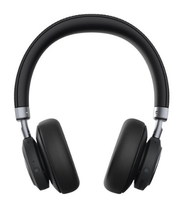
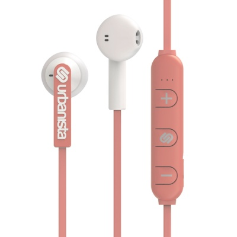
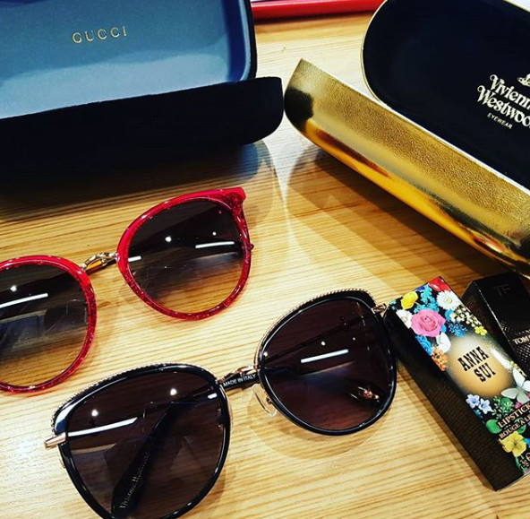
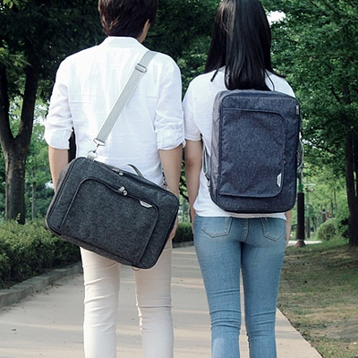
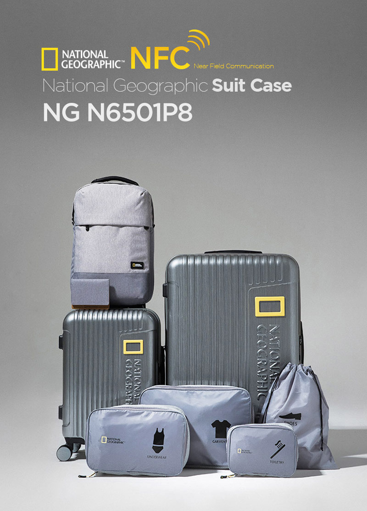

쇼핑기록//
3월에 작성하는 1월구매 ㅋㅋㅋㅋㅋ
31일 비행기 타기전 지른 것들
장시간 비행을 무진장 걱정하면서 구입한 무선 헤드폰

광화문 교보갔다가 우연히 발견한 헤드폰리너 NC90 가격 적당하길래 구매했습니다.
인이어 / 헤드폰을 못쓰는 이유가 길 걸어다닐때 안에서들리는(?) 내 발걸음 소리를 못견뎌 합니다;;; (거참;;)
비행기탈 때 잘 썼고 현재는 집에서 설겆이, 청소리 돌릴때 유용하게 사용하고 있습니다. ㅋㅋㅋㅋㅋ
무선의 신세계를 알고 어바니스타 블루투스 이어폰 베를린도 구매

핑쿠핑쿠
충전이 귀찮지만 무선이어폰이 주는 편리함은 넘 신세계 에요 ;ㅂ;

구찌 / 비비안웨스트우드 선글라스
면세 충동구매(.......)
진심 선글라스 그만사야하는데;;
립스틱
안나수이 400 / 톰포드 미니 72

핫트랙스 광고에 낚여 구입한 가방인데 넘 잘 사용했습니다.
프리웨이백
숄더 / 백팩 / 캐리어 결합백으로도 사용할 수 있고
내부 섹션도 구성이 좋아서 아이슬란드 2박3일로 갈때 요 가방 하나만 들고 갔어요 :)
뿌듯한 구매 였습니다.

드디어 10년도 넘은 나의 샘소나이트 캐리어와 안녕을 고하고
내셔널지오그래픽 캐리어 세트 구매했습니다
28......인가 27인치 하나 기내용 하나
여행용 가방 + 커버 / 백팩까지 주는 훈륭한 구성 :D
근데 커버는 한국 돌아올때 짐 찾을려고 보니 홀라당 벗겨져서 어디론가 사라졌더라구요;;;
아래 찍찍이로 붙이는거라 옮기는 도중 벗겨졌나봅니다;;
해서 집에 돌아와서 스판재질 + 지퍼달린걸로 새로 구매했는데
.........어쩐지 빤쮸입히는 느낌 ㅋㅋㅋㅋㅋㅋㅋㅋㅋㅋㅋ
느낌상 여행 떠나기도 전에 무진장 많이 질렀다고 생각했었는데
정리해놓고 보니 그렇게 많진 않네용 ^^**